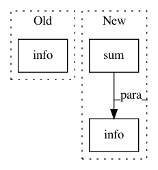

61d16bbf3147208c426e001299dca496bf2b5248,gensim/models/word2vec.py,Word2Vec,scan_vocab,#Word2Vec#Any#Any#,479
Before Change
min_reduce += 1
total_words += sum(itervalues(vocab))
logger.info("collected %i word types from a corpus of %i words and %i sentences" %
(len(vocab), total_words, sentence_no + 1))
self.corpus_count = sentence_no + 1
self.raw_vocab = vocab
def scale_vocab(self, min_count=None, sample=None, dry_run=False):
After Change
vocab = defaultdict(int)
for sentence_no, sentence in enumerate(sentences):
if sentence_no % progress_per == 0:
logger.info("PROGRESS: at sentence //%i, processed %i words, keeping %i word types",
sentence_no, sum(itervalues(vocab)) + total_words, len(vocab))
for word in sentence:
vocab[word] += 1
if self.max_vocab_size and len(vocab) > self.max_vocab_size:
In pattern: SUPERPATTERN
Frequency: 3
Non-data size: 3
Instances
Project Name: RaRe-Technologies/gensim
Commit Name: 61d16bbf3147208c426e001299dca496bf2b5248
Time: 2015-07-06
Author: radimrehurek@seznam.cz
File Name: gensim/models/word2vec.py
Class Name: Word2Vec
Method Name: scan_vocab
Project Name: RaRe-Technologies/gensim
Commit Name: 599b6aea7827c30b2ecb281c80d5171e7de273c9
Time: 2015-07-06
Author: radimrehurek@seznam.cz
File Name: gensim/models/word2vec.py
Class Name: Word2Vec
Method Name: scan_vocab
Project Name: MaybeShewill-CV/lanenet-lane-detection
Commit Name: 699898507179e8429792c137b5af404551d049e1
Time: 2018-05-31
Author: luoyao@baidu.com
File Name: tools/test_lanenet.py
Class Name:
Method Name: test_lanenet_batch